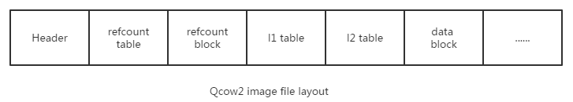
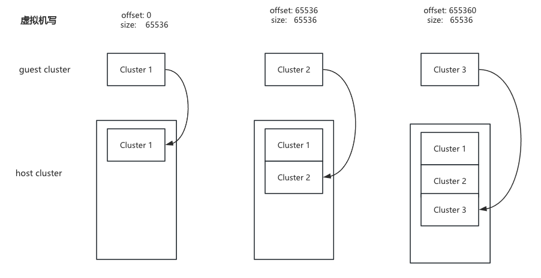
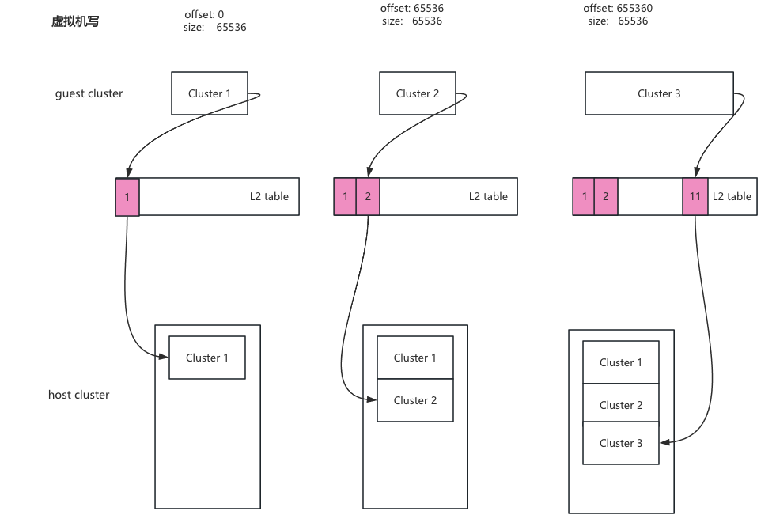
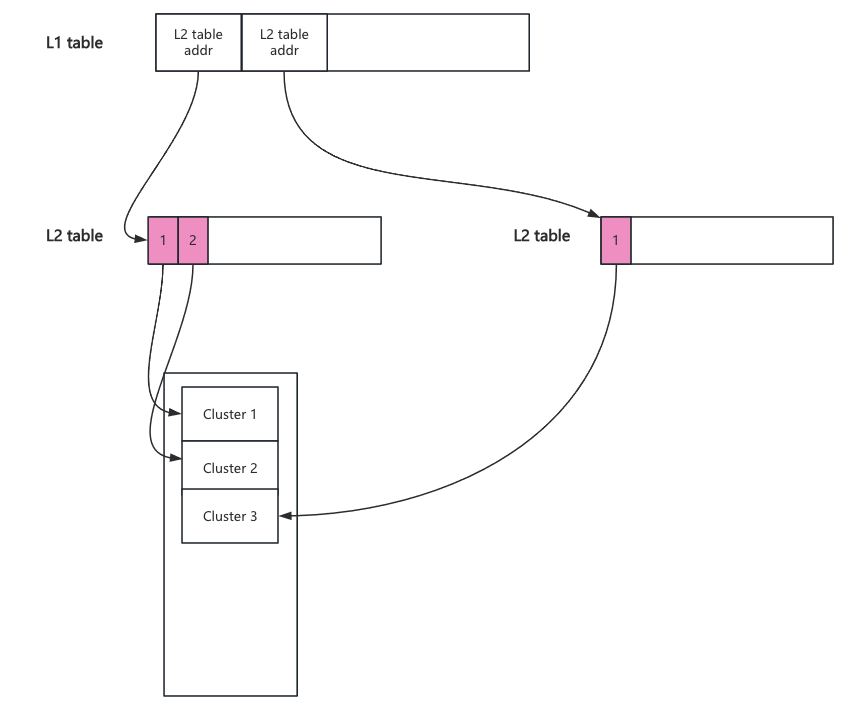

qcow2文件格式
一、基本概念
1.1 qcow2是什么
qcow2 是一种虚拟磁盘镜像格式，全称是 “QEMU Copy-On-Write version 2”。它可以用一个文件的形式来表示一块固定大小的块设备磁盘。
动态分配：qcow2 支持按需分配空间，不会立即占用所有磁盘容量，而是随着数据写入逐渐扩展大小，节省存储空间。
支持快照：qcow2 格式允许创建快照。
压缩和加密：qcow2 格式支持对数据进行压缩以减少磁盘空间，并可以启用AES加密来保护镜像数据的安全。
写时复制（Copy-On-Write, COW）：这意味着只有在镜像文件上有新的写操作时，才会实际改变文件内容，这样可以更高效地使用磁盘空间。
1.2 名词解释
| 术语 | 说明 |
|---|---|
| offset | 相对于qcow2文件(img)起始处的偏移量 |
| cluster | qcow2文件由固定大小的单元组成，该单元称为cluster，默认大小为65536bytes/64K |
| sector | 数据块读写的最小单元，大小为512字节 |
| host cluster | Host上qcow2文件的cluster |
| guest cluster | Guest上virtual disk的cluster |
| qcow2 header | qcow2文件的头信息，占用第一个cluster |
| refcount | qcow2内部用于管理cluster的分配而维护的引用计数 |
| refcount table | 用于查找refcount的第一级表 |
| refcount block | 用于查找refcount的第二级表 |
| L1 table | 用于查找guest cluster到host cluster映射的第一级表 |
| L2 table | 用于查找guest cluster到host cluster映射的第二级表 |
| IBA | image block address |
| VBA | virtual block address |
1.3 qcow2文件格式
qcow2中所有数字按大端字节序存储
1.3.1 文件头
qcow2文件的第一个cluster包含文件头：
1 | struct QCowHeader |
1.3.2 文件头扩展
在文件头之后，可以存储称为文件头扩展的可选部分，每个扩展都有如下结构：
1 | struct Qcow2UnknownHeaderExtension |
Qcow2UnknownHeaderExtension结构说明:
Byte 0 - 3: Header extension type:
0x00000000 - End of the header extension area
0xE2792ACA - Backing file format name
0x6803f857 - Feature name table
other - Unknown header extension, can be safely ignored
4 - 7: Header extension数据长度
8 - n: Header extension数据部分
n - m: 为对齐到8字节的填充部分
other - Unknown header extension, can be safely
ignored
4 - 7: header extension 的数据长度0000 0005 5byte
8 - n: Header extension数据部分 7163 6f77 32
n - m: 为对齐到 8字节的填充部分 00 0000
注意: 除非特别说明，否则每个Header extension type只能在image中出现一次
1.3.3 backing file name
头扩展区域的末尾和第一个cluster的末尾之间的剩余空间可用于存放后备文件路径名。
1.4 qcow2文件格式
refcount table/refcount block/l1/l2的顺序关系不限
二、Host cluster management
qcow2通过维护引用计数来管理Host cluster的分配。refcount为0表示cluster 空闲，1表示cluster已被使用，>=2表示cluster已被使用并且任何写访问都必须执行COW操作。引用计数通过二级表进行管理。
refcount table
- 其大小是可变的，以cluster为单位分配
- 若分配多个cluster，则占用空间必须是连续的
- 每个entry大小为8字节，存放的是refcount block表的offset
refcount block
- 大小为1 cluster
- 每个entry大小为2字节，存放refcount
1 | // 给定qcow2文件的offset，其cluster的refcount可以通过下列公式计算得出 |
refcount table entry ：
1 | Bit 0 - 8: Reserved (set to 0) |
**refcount block entry ** :
x = refcount_bits - 1，refcount_bit值与qcow2 header中refcount_order变量有关
Bit 0 - x: cluster的refcount
三、Cluster mapping
3.1 为什么需要Cluster mapping
以向一个空的qcow2文件写入数据为例，假设cluster大小为65536字节。
从前两次写操作来看，似乎虚拟机写入的数据与写入qcow2文件的数据成某种线性关系。起始为0，大小65536的数据写入第一个cluster中。起始为65536，大小65535的数据写入第二个cluster。如果第三次写起始为655360，大小65536数据？qcow2并不会把它放在第11个cluster中，而是放在第三个cluster中。这样qcow2就不会向raw一样产生空洞，qcow2文件随着不停的写入数据而慢慢变大。然而这样也同时打破了虚拟的地址偏移与qcow2的地址偏移的线形关系。
正是因为虚拟机写入的数据与写入到qcow2文件中的数据不成线性关系，因此qcow2 需要通过映射表查询cluster真实的存储位置。为此qcow2文件中通过L2 table来记录虚拟地址偏移与qcow2文件地址偏移的关系。L2 table中的每一项都是一个64位地址，存某个cluster在qcow2文件中的offset。
guest cluster对应host cluster真实位置保存在L2 table的第N个元素中，其中N与guest cluster成线性关系。
一个qcow2文件以cluster为单位进行切分, L2 table记录guest cluster到host cluster的映射关系。一个L2 table大小等于一个cluster的大小。cluster默认大小是64K，即一个L2 table有8192个元素，可以管理512M大小空间。当超过512M大小的时候qcow2会新建一个L2 table，由于新建的L2 table与之前的L2 table地址不相邻（其实每一个L2 table只是qcow2文件中的一个cluster，每次新建一个L2 table也就是分配一个cluster）。所以qcow2没办法简单的记录它，因此产生 L1 table。 L1 table中每一个元素都指向一个L2 table的地址。L1 ta ble的地址保存在qcow2 header中。
3.2 L1 table与 L2 table
与refcounts一样，qcow2使用二级表将guest cluster映射到host cluster。它们被称为L1 table和L2 table。
L1 table
- 其大小是可变的，以cluster为单位分配
- 若分配多个cluster，则占用空间必须是连续的
- entry个数等于qcow2 header中l1_size变量的值
- 每个entry大小为8字节，存放的是L2 table的offset
L2 table
- 大小为1 cluster
- 每个entry大小为8字节，存某个cluster在qcow2文件中的offset。
1 | // 给定虚拟磁盘的offset，其对应到qcow2文件的offset可以通过下列公式计算得出 |
L1 table entry
1 | Bit 0 - 8: Reserved (set to 0) |
L2 table entry
Bit 0 - 61: Cluster descriptor
62: 0 for standard clusters
1 for compressed clusters
63: 0表示未使用或需要COW的cluster，1表示它refcount正好是1。此信息仅在活动的L1表访问L2表中是准确的。
Standard Cluster Descriptor:
Bit 0: 如果为1，则从cluster读取时返回全0数据。这通常描述预分配，但它不会用于从cluster读取数据，如果集群末分 配，也不会从后备文件读取致据。
With version 2, this is always 0.
1 - 8: Reserved (set to 0)
9 - 55: host cluster在img中的offset，必须与cluster对齐。如果该值为0则表示该cluster未分配。
56 - 61: Reserved (set to 0)
如果cluster未分配，读请求会从后备文件中获取数据(除非设置了Standard Cluster Descriptor中的第0位)。如果没有后备文件或后备文件小于image，则对后备文件未覆盖的所有部分一律读零